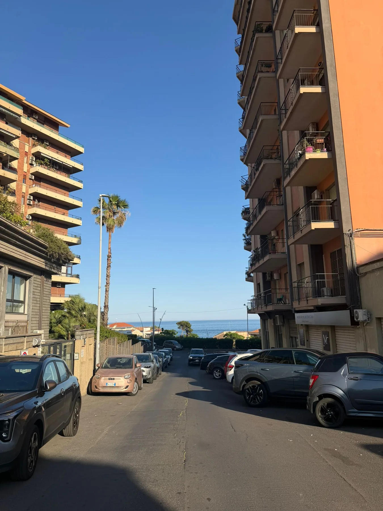
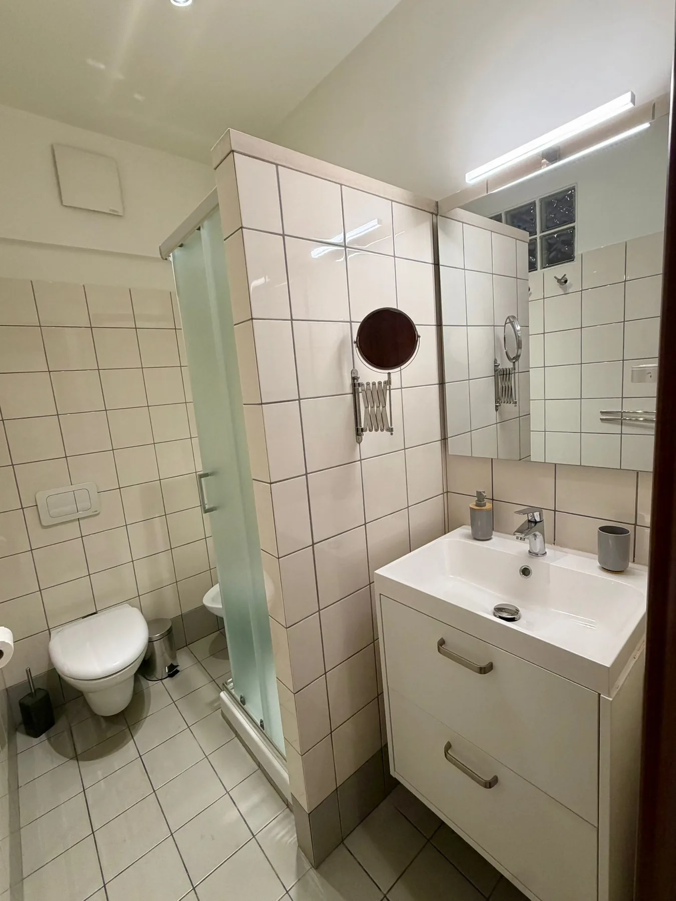
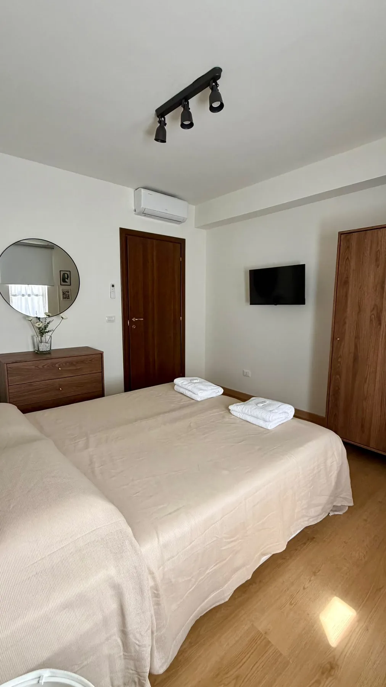
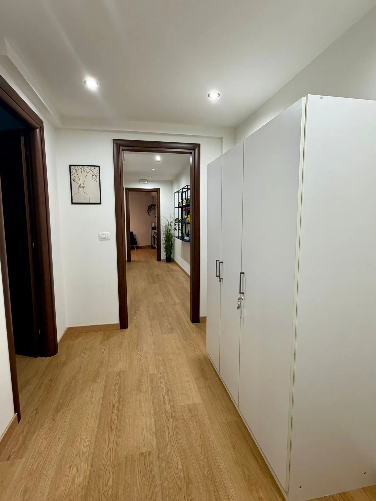

Vivere insieme

Catania · Sicilia
Spazi ampi, due camere matrimoniali e tutto il necessario per vivere Catania in piena libertà.
Benvenuti
Cuti Home è pensata per coppie, famiglie e gruppi di amici che desiderano soggiornare a Catania con il comfort di una vera casa.
Camere spaziose, cucina attrezzata, zona giorno conviviale, climatizzazione e lavanderia completa.



Comfort inclusi
Tutti gli ambienti
41 fotografie selezionate, senza doppioni.
La posizione
Una base comoda per scoprire Catania, il lungomare, la cucina siciliana e le escursioni sull'Etna.
Apri su Google Maps →Il tuo soggiorno